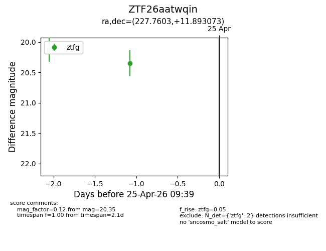
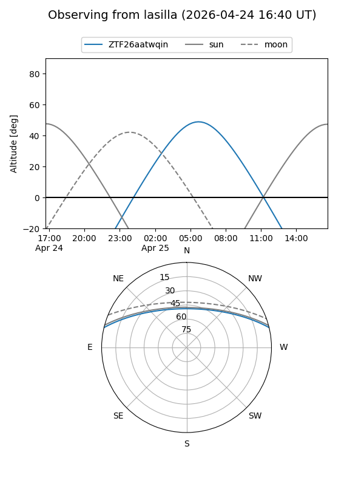
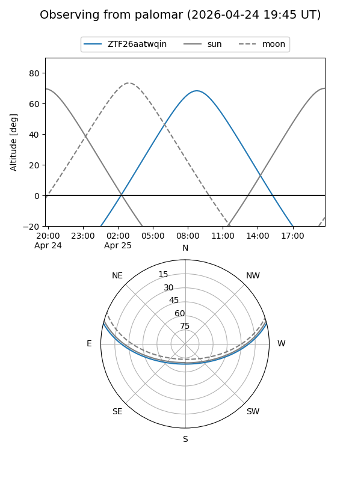

ZTF26aatwqin
Target ZTF26aatwqin at 2026-04-25 09:40
Aliases and brokers:
FINK: link
Lasair: link
ALeRCE: link
alt names
ZTF26aatwqin (ztf,fink_ztf)
Coordinates:
equatorial (ra, dec) = 227.7603,+11.89307
equatorial (HMS+DMS) = 15:11:02.47,+11:53:35.06
galactic (l, b) = (14.8749,+53.92253)
Flags:
Photometry:
last ztfg=20.35
2 ztfg detections
Lightcurve

Visibility


Additional plots